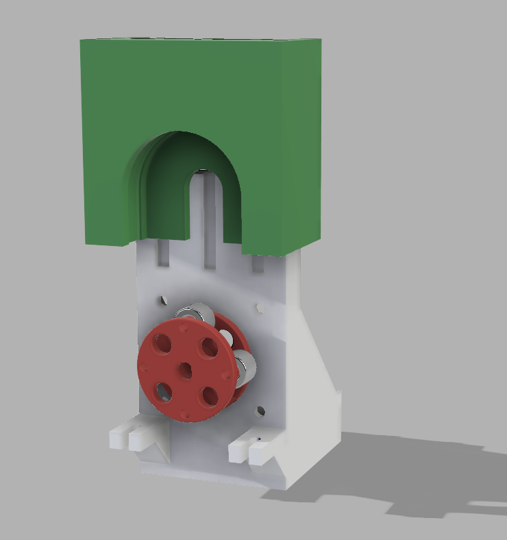
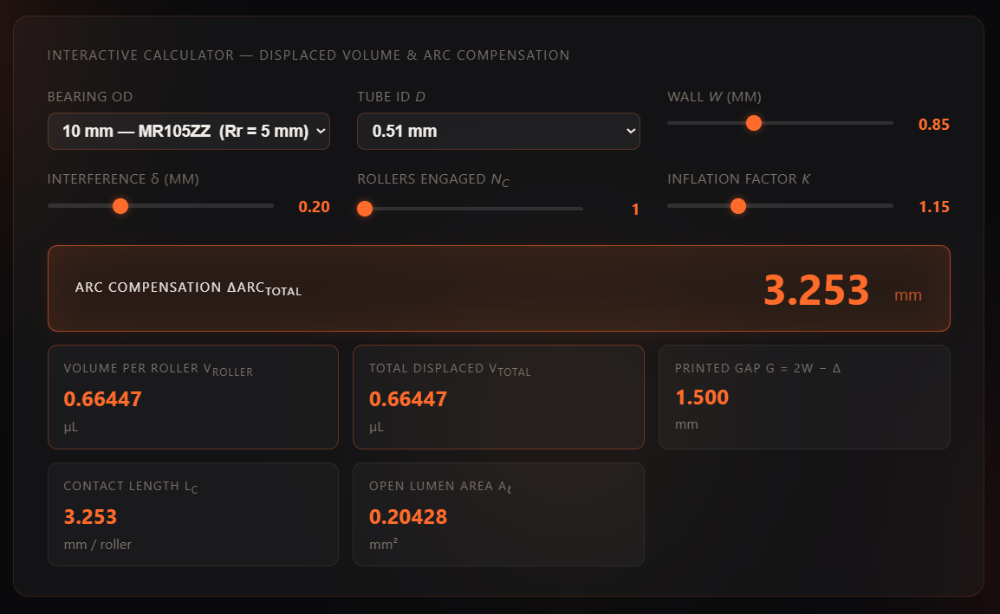
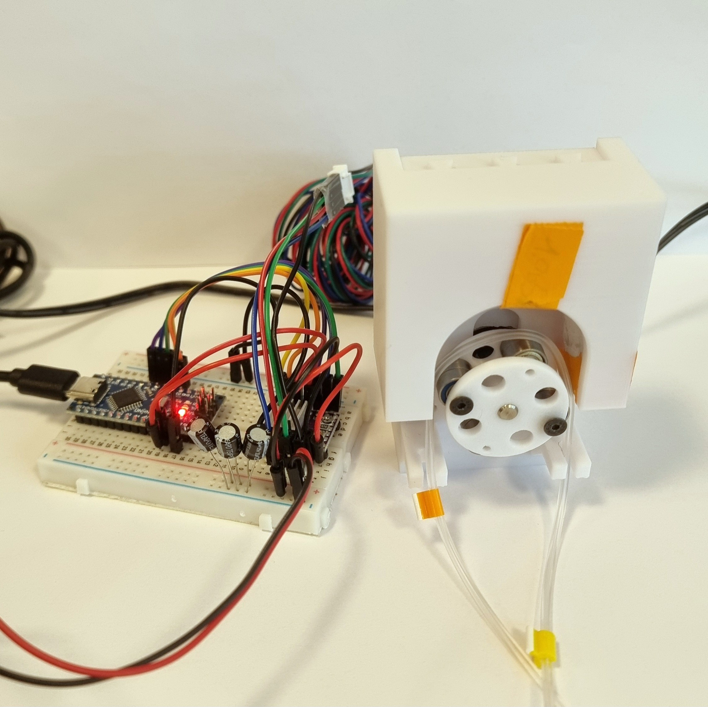

Prototype Design Space
A trail of hardware decisions — each prototype a question posed to the physics. Click a node to open its full story.
5 µL 4-roller peristaltic — baseline
Purpose
The first physical build — its job was never to hit spec, but to learn. A minimum viable prototype with three goals:
- Prove the concept — can a peristaltic pump be built in this modular, 3D-printed, point-of-care form, and does it actually move liquid?
- Validate the model — is the geometry model I built correct, and does how I modelled the system match reality?
- Learn before committing — get a physical object in hand to extract as much information as possible before the next design cycle.
On all three it delivered: it pumps, the model predicts the messy reality to ~11 %, and it exposed three concrete, fixable design errors.


Parameters (as built) & why each was chosen
Designed using the Rotor Geometry Solver and the Displaced-Volume Model. The second tool outputs the arc compensation that is pasted into the first — so its inputs propagate into the physical rotor size.
| Parameter | Value | Why this value |
|---|---|---|
| Target volume / stroke | 5.0 µL | Smallest aliquot the dispensing application targets |
| Roller count N | 4 | Fewest hand-offs for discrete dosing (see below) |
| Rollers engaged Nc (entered) | 1 ⚠ | Mistake — a 180° arc with 4 rollers always has 2 engaged |
| Tube inner diameter d | 0.51 mm | Smallest 2-stop microbore that gives a workable rotor size |
| Tube wall w | 0.85 mm (est.) | From a similar tube (online) + caliper check — see below |
| Roller bearing | MR105ZZ, 10 mm OD (Rr = 5 mm) | Small standard shielded bearing → compact rotor |
| Interference δ (design) | 0.20 mm | Mid of the 10–20 % × 2w occlusion band |
| Inflation factor k | 1.15 | Compliant-tube correction (Klespitz & Kovács 2022) |
| Rotor radius R (built) | 17.70 mm | Solver output (carries the Nc=1 error) |
| Printed gap G (built) | 1.75 mm ⚠ | Should have been ≈1.50 mm — see below |
| Loose-fit tolerance | 0.25 mm ⚠ | Too loose → head wobble |
| Steps / stroke (firmware) | 50 | 200 steps/rev ÷ 4 rollers |
The tube is a Darwin Microfluidics 2-stop Puri-Clear LL (0.51 mm ID), platinum-cured silicone microbore.
Key decision — why 4 rollers
Selected over higher counts despite continuous-flow practice (Cole-Parmer, Ismatec) recommending 8–10 rollers for low-flow accuracy below 5 mL/min. The distinction is operational mode: those recommendations target continuous metering, where more rollers reduce pulsation. This system does discrete stop-start aliquot dosing, where each roller hand-off (one releasing as the next engages) is an error event at the stop. Fewer rollers → fewer hand-offs per dispense → fewer stop-event errors — the opposite of the continuous-flow heuristic. A 4-roller pump completes ~one hand-off where an 8-roller pump completes ~two.


The design calculation, worked
The two tools run a six-step chain from tube mechanics to rotor size. Each step is described, then computed at the proto-01 design point.
1. Lumen area A. The lumen is the open channel inside the tube that carries the liquid — a circle of diameter d. Its cross-sectional area sets how much volume a given length of swept tube holds:
with d = 0.51 mm (tube inner diameter).
2. Roller contact length Lc. When a roller of radius Rr presses a depth δ into the tube, it flattens a finite length along the flow axis. From the chord geometry of a cylinder pressed into a surface, the half-contact-width is \(\sqrt{2R_r\delta}\); doubling gives the full footprint, and the empirical factor k > 1 lengthens it because a real compliant tube contacts over a longer span than rigid geometry predicts:
with Rr = 5 mm (roller radius), δ = 0.20 mm (design interference), k = 1.15.
3. Arc compensation ΔArc. Along the contact length Lc the roller pinches the tube shut, so that segment of lumen holds no liquid and delivers nothing. The pure delivery arc (vol/A) assumes every mm of swept tube is full, so it over-counts by exactly this occluded length — the stroke must sweep an extra Lc per engaged roller to make up the shortfall. With Nc rollers engaged at once, the total compensation is their combined contact lengths:
4. Arc swept per roller arc. The arc each roller drags the tube through per stroke is the useful delivery arc (target volume ÷ lumen area) plus the compensation arc:
with vol = 5.0 µL (target volume per stroke).
5. Gross swept volume geomVol. Multiplying the swept arc by the lumen area gives the gross geometric volume displaced per stroke:
6. Rotor radius R. The rotor is sized so its N evenly-spaced rollers each sweep this arc over the 180° contact zone. Setting the pitch-circle so the per-roller arc is delivered:
with N = 4 rollers, rounded to 0.1 mm (Bambu P1S print resolution). This R = 17.70 mm is the rotor that was printed — so the Nc=1 error is now baked into the physical part.
What actually happened in the hardware
The gap was wrong — the tube was never occluded. The displaced-volume tool prescribes the gap as G = 2w − δ = 1.50 mm. The part was instead built at 1.75 mm. The tube only fully closes once the gap drops below the "walls-kiss" point, G = 2w = 1.70 mm. Since 1.75 mm > 1.70 mm, the rollers never squeezed the tube shut at all — by design — so the pump could not move liquid. This is independent of the Nc error: the tool's gap output simply was not carried into the CAD.
The paper-shim fix. To make it run, paper was folded into the groove so the tube sat proud and the rollers could reach it. Measuring the folded paper with a caliper (itself hard — it compresses): ≈1.0–1.1 mm light, ≈0.85 mm firm, ≈0.78 mm very hard. That raised the tube by ~0.8–1.1 mm, turning the effective gap into roughly 0.9–1.1 mm — an effective interference δeff ≈ 0.6–0.8 mm, a heavy over-squeeze. The actual delivery is measured next; the model is then checked against it.
Results
Manual 1 mL open-loop calibration — two independent methods. Gravimetric is the absolute reference.
| Method | n | Mean delivered | CV | Implied µL/stroke | Error vs 1 mL |
|---|---|---|---|---|---|
| Gravimetric · reference | 3 | 678 µL | 4.5 % | 3.39 | −32.2 % |
| Flow sensor | 5 | 600 µL | 17.6 % | 3.00 | −40.0 % |
Flow reads ≈ 11.5 % below gravimetric (low-flow tails cut by zero threshold + sensor bias). Trust gravimetric for the absolute number; use flow for dynamics (ripple, priming).

Discussion — does the model predict the result?
Feeding the actual occlusion back through the model closes the loop. The built rotor sweeps arc = 27.73 mm; the net delivered volume is the gross sweep minus the real arc compensation, now using the firm-shim over-squeeze (δeff = 0.80 mm) and the true Nc = 2:
Error budget (from the 5.0 µL intent):
| Mechanism | Contribution | Confidence |
|---|---|---|
| Gap 1.75 > 1.70 mm → zero natural occlusion (needed the shim) | enabling failure | Certain |
| Shim over-compressed (δeff≈0.6–0.8 vs 0.20) → arc wasted to deformation | −1.6 to −2.0 µL | Likely |
| Nc=1 not 2 → rotor under-sized (R 17.7 vs 19.7 mm) | ≈−0.67 µL | Certain |
| Paper thickness varies 0.78–1.1 mm across sections | drives the CV | Very likely |
A systematic under-delivery (consistent, CV 4.5 %), not random noise — exactly what a fixed-geometry error looks like.
Wall thickness — a real measurement problem
w is the highest-leverage input (it sets the gap via G = 2w − δ) and the hardest to pin down. The exact tube's datasheet doesn't cleanly state the wall, so the 0.85 mm value comes from an online check of a similar tube model (the precise dimensions of this one weren't published), then verified with a caliper — which roughly confirmed it, though the soft tube compresses under the jaws so the reading is unreliable. That the pump delivered anything before reliable shimming hints w may be slightly above 0.85 mm.
Noise & vibration test (firmware)
Proto-01 was very noisy with strong vibration on the DRV8825 driver in full step. A purpose-built bench tool (vibration_test.cpp) allowed live sweeping of microstepping × speed over serial without re-flashing. On a DRV8825 there is no "smoothing library" — the levers are the acceleration ramp (already handled) and microstepping.
Bench-tested best noise-vs-torque compromise on the existing DRV8825 — quiet and smooth enough while keeping torque margin (1/4-step's torque penalty is small, so step-skip risk under the 2-roller load stays low). A silent TMC2209/2226 driver is the fallback if more silence is later needed, but it costs torque on this torque-hungry, open-loop pump. Finding: full step is the noise source; 1/4 step at ~180 RPM is the recommended operating point — free, no new parts.
Issues observed
- Tube not squeezed enough — gap too wide; needed a paper shim to function at all (the headline mechanical failure).
- Under-delivery — ≈3.4 µL vs 5.0 µL target, −32 %.
- Pump head not fixed — had to be held down by hand during delivery; no locking mechanism.
- Wobble — 0.25 mm loose tolerance let the head move, and head position is the gap.
- Noisy / vibration — full-step DRV8825 (addressed above).

→ Inputs for Proto-02
This is the design brief the next prototype carries forward.